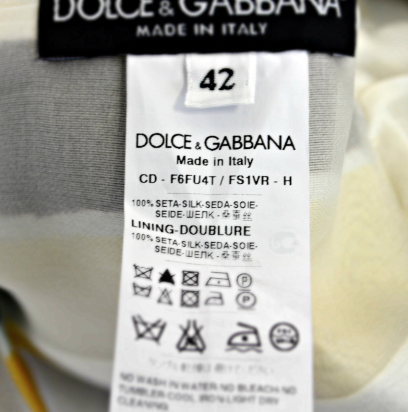

하이퍼링크를 통해, 독자가 한 문서에서 다른 문서로 즉시 접근할 수 있는 텍스트를 말한다.
표기 방식
언어
사람과, 컴퓨터간의 소통을 위한 약속이다.
그 약속을 이루는 규칙들.
HTML은, 수 많은 진화 과정을 반복하였다.
웹 브라우저에게, 어떤 (HTML)표준에 맞춰, 이 문서를 작성했는지 알려준다.
<a href=“linkUrl”>link</a>
<input type=“text” value="내용" />
특정 항목(옷)을 대표하는 (낱말 또는 키워드)
HTML 을 대표하는 (낱말 또는 키워드)
https://developers.google.com/webmasters/state-of-the-web/2005/elements
문서의 root(top-level element) 를 의미한다.
문서 자체를 나타내는 정보가 포함된다.
문서의 제목을 포함한다.
문서의 본문을 포함한다.
문서에 링크를 포함한다.
문서에 이미지를 포함한다.
문서 자체를 설명한다.(Meta Data)
문단의 제목을 포함한다.
단락을 포함한다.
줄바꿈을 위해, 사용된다.
문서에 표를 포함한다.
표에 행을 포함한다.
표에 열을 포함한다.
사용자 입력을 위한, 양식을 포함한다.
중첩된 문맥을 포함한다.
정보로써의 가치를 말한다.
크롤링 가능한 모든 엔진들(검색 엔진 등)